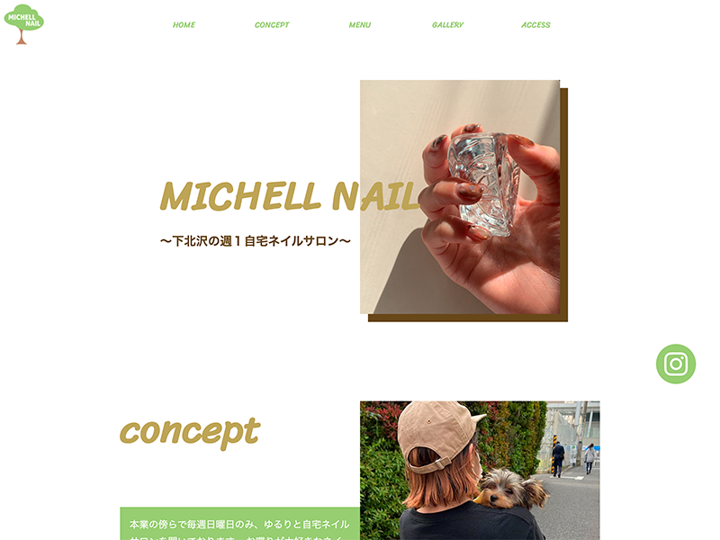

WORK
-banner-


-web site-

友人の経営しているネイルサロンのサイトを制作しました。要望などは特に無く、自ら全てデザインし制作しております。グリーンの多い店内ということでアースカラーで統一しました。jsやjQueryはまだ勉強不足であまり動きを付ける事が出来ませんでしたが、CSSのみで出来る限り動きを付けました。
-Asaka Okano-
2020年4月までアパレルショップ店長として働いていました。ふと今後の人生について考えたときに一生この仕事続けるのか…？(長く働いている方も、もちろんいらっしゃいますが！)と思い、何か手に職を付けようと考え、webデザインについて学び始めました。まだまだ未熟ですが、一流のwebデザイナーになるべく日々精進しています！元アパレル店員でしたので、ファッションやオシャレなものが大好きです☺︎お仕事で活かしていければなと思っています。
友人の経営しているネイルサロンのサイトを制作しました。要望などは特に無く、自ら全てデザインし制作しております。グリーンの多い店内ということでアースカラーで統一しました。jsやjQueryはまだ勉強不足であまり動きを付ける事が出来ませんでしたが、CSSのみで出来る限り動きを付けました。